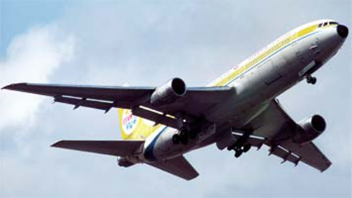

L-1011-500 Tristar

- Разработчик: Lockheed
- Страна: США
- Первый полет: 1978
- Тип: Среднемагистральный пассажирский самолет
L-1011 TriStar 500 — это широкофюзеляжный пассажирский самолёт, созданный американской компанией Lockheed Corporation. Он производился с 1970 по 1984 годы и имел три основные модификации: TriStar 100, TriStar 200 и TriStar 300.
L-1011 TriStar 500 совершил первый полёт 16 октября 1978 года. Он имел укороченный фюзеляж по сравнению с другими моделями и большую дальность полёта. Всего было произведено 250 самолётов этой серии.
| Летно технические характеристики | |
|---|---|
| Модификация | L-1011-500 |
| Размах крыла максимальный, м | 50.06 |
| Длина, м | 50.05 |
| Высота, м | 16.87 |
| Площадь крыла, м2 | 329.00 |
| Масса, кг | |
| - пустого самолета | 108900 |
| - максимальная взлетная | 231500 |
| Тип двигателя | 3 ТРДД Rolls-Royce RB211-524B4 |
| Мощность, кгс. | 3 х 22700 |
| крейсерская скорость, км/ч | 973 |
| Практическая дальность с 1300 кг груза, км | 9700 |
| Практический потолок, м | 12800 |
| Экипаж, чел | 3-4 |
| Полезная нагрузка: | 246 пассажиров в салоне двух классов или 330 пассажиров максимально или 44400 кг груза |